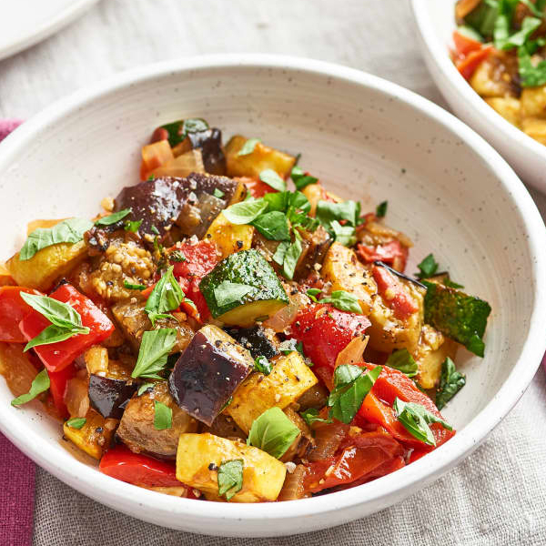

Ratatouille

Description
The best way to eat lots of veggies, with a delicate European flavour profile of fresh vegetables and olive oil.
Ingredients
- 5 tablespoons olive oil, divided, plus more for serving
- 1 1/2 pounds eggplant (1 large), large dice
- Kosher salt
- Freshly ground black pepper
- 1 1/2 pounds zucchini or summer squash (3 to 4 medium squash), large dice
- 1 medium yellow onion, diced
- 2 cloves garlic, minced
- 2 sprigs fresh thyme
- 1 bay leaf
- 1 pound tomatoes (3 to 4 medium), large dice
- 1 large bell pepper, large dice
- 1/4 cup loosely packed fresh basil leaves, thinly sliced, plus more for serving
Instructions
- Heat 2 tablespoons of the oil in a large Dutch oven or heavy-bottomed pot over medium-high heat until shimmering. Add the eggplant, season generously with salt and pepper, and cook, stirring occasionally, until browned in spots, about 2 minutes. Transfer to a large bowl.
- Add 2 tablespoons of the oil to the pot. Add the zucchini, season generously with salt and pepper, and cook, stirring occasionally, until browned in spots, about 2 minutes. Transfer to the bowl with the eggplant.
- Reduce the heat to medium. Add the remaining 1 tablespoon oil and the onion, season with salt and pepper, and cook, stirring occasionally, until softened and just beginning to brown, 6 to 8 minutes. Add the garlic, thyme, and bay leaf and cook until fragrant, about 30 seconds. Add the tomatoes and bell peppers. Add the reserved eggplant and zucchini and gently stir to combine.
- Bring to a simmer, then turn down the heat to medium-low. Simmer, stirring occasionally, for at least 20 minutes or up to 1 1/2 hours. A shorter cooking time will leave the vegetables in larger, more distinct pieces; longer cooking times will break the vegetables down into a silky stew.
- Remove the bay leaf and thyme sprigs. Just before serving, stir in the basil. Taste and season with salt and pepper as needed. Serve, sprinkling each serving with more basil and drizzling with more olive oil.
Notes
- Making a larger batch: This recipe can be doubled and adapted to use whatever vegetables you have.
- Flavor extras: For something different, try adding a tablespoon of smoked paprika, a pinch of red pepper flakes, 1/4 cup of red wine, or a splash of vinegar to the ratatouille.
- Storage: Leftovers can be stored in an airtight container in the refrigerator for up to 5 days.
Recipe source
Return to homepage